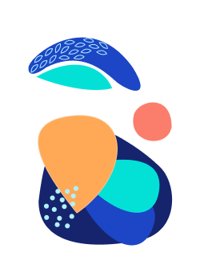

Hello! I'm Rashel Ochoa.
Adventurer. Storyteller. Experientialist. Critical Thinker. Curator.
Adventurer. Storyteller. Experientialist. Critical Thinker. Curator.
My story to design is not a traditional one. Growing up, I didn’t build astronauts out of legos, create intricate papier-mâché figures, or whatever it is that natural born designers do at a young age. I was, however, fortunate enough to have been born into a world with two cultures. Born in Mexico City and raised in Texas, I saw culture as key to unlocking new and foreign worlds teeming with diverse perspectives. With a yearning for new experiences, I set out on cross-cultural adventures, learning how to practice empathy simply by listening to the stories of the people I met. And in doing so I learned that people from different cultures had become less foreign and more familiar once I realized we were all connected by the same motivations. This experience-based knowledge allowed me to become more in tune with myself, striving to see the beauty in everything simply by placing it in a new light, adding a splash of color, and a pinch of perspective.
Fast forward to high school, my passion to express myself creatively through singing pushed me to audition for the top performing arts high school in the nation. I remember the day so clearly, walking through the halls of HSPVA. Nervous didn’t begin to explain the way I felt before entering the room American-idol style, to a panel of judges waiting to hear me sing. But from the moment I let that first note soar, the nerves melted away finally feeling comfortable in my own skin. When my acceptance letter arrived my family and I packed our bags to move to Houston, and for a brief moment nothing gave me more joy than to stand in front of an audience to express someone else’s story through song.
But when the financial struggles of a vocal career and the pressure to conform to a traditional path hit me, I enrolled in business school where I began a new chapter of developing my analytical, “right brain” skills that I would carry with me throughout my future endeavors.
Life after college had been comprised of a series of trial and error efforts to find the path that rung true with me. After trial running a sales career, I’d accepted a position at an understaffed digital marketing agency where I got my first break into the world of design. In true startup fashion, I learned how to wear multiple problem-solving hats to craft marketing campaigns, but also to help the UX design team build the information architecture of a fertility tracker app for a women’s health organization. It was a reiterative process where I consistently tested and adopted changes that would better serve the needs of women. I knew I had a passion to design products to impact positive change, but it wasn’t until I’d seen the app’s positive reviews that I understood the power that design and tech had in bettering our world. Before wrapping up this project, I enrolled in a UX Design course led by my company for new designers. 6 weeks later I’d become one of the top performing students in the class; but most importantly, I’d suddenly felt a sense of belonging, feeling over-the-moon that my true path had finally begun to scrape the surface.
In 2017, I took a leave of absence from work to embark on an introspective backpacking journey through South East Asia and South America. On my travels, I took advantage of the extra time to be still, reflect, and absorb as much knowledge while on the road. I used mobile apps and a ton of courage to talk to people from distant places, practice mindfulness, volunteer to help families run their coffee farms in rural Nicaragua, and explore places off the beaten path. Some of my greatest connections were made when I let vulnerability and empathy run the conversations. And in doing so, I found myself learning about their personal motivations and frustrations, slowly collecting stories that I would one day share with my own community.
Through these conversations, I realized the tremendous role that technology and its accessibility played both in my life and in those living across the world… yet it still had so much room for growth. Listening to the problems that design and technology could solve while on my travels is what made me take the leap to join Bloc’s Design Track program immediately upon my return. I decided I wanted to use my imagination to visualize the infinite possibilities for growth – to confront today’s challenges in order to create tomorrow’s opportunities – and it’s a decision I’ve never looked back on.
I firmly believe that everything that’s led up this point in my life has played a role in developing my skills as a designer. From learning empathy at a young age, to developing a creative problem-solving mindset in business school, to flexing my visual design muscles throughout my work experiences, I’ve learned how to combine my range of knowledge and skills to excel in goal-driven design.
Today, I design with individuality in mind and firmly believe in the power of design thinking as a systematic approach to innovation, empowerment, and originality. I view design as a lense from which designers can bridge human desires with technologically feasible and economically viable solutions by converting necessity to utility and constraint to opportunity. I love what I do and am eager to fuse my passions for technology, people, and design to curate solutions with game-changing, disruptive potential, and which aim to make a tiny fragment of our world a better place. If that’s what you believe too, then let’s connect!